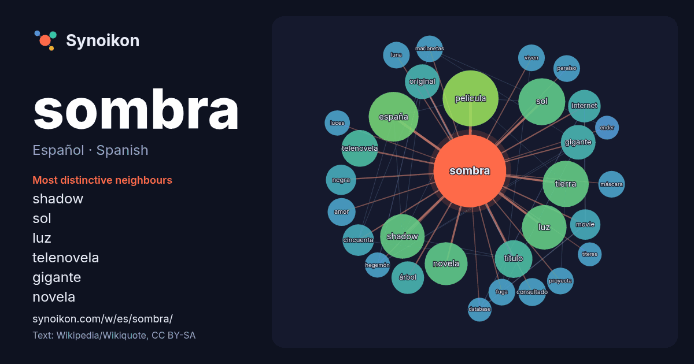

Español · Spanish · word of the day list
sombra
“shadow” · The words found around it in 1214 instances from Spanish Wikipedia, Wikiquote.

Most distinctive neighbours
- shadow 28×
- sol 22×
- luz 19×
- telenovela 18×
- gigante 17×
- novela 16×
- película 14×
- movie 14×
- cincuenta 13×
- internet 13×
- consultado 12×
- españa 12×
- tierra 11×
- árbol 11×
- marionetas 11×
- proyecta 11×
- negra 11×
- paraíso 10×
- fuga 10×
- original 10×
× = how many times more often than in general Spanish Wikipedia text.
Most frequent neighbours
- película 44
- españa 35
- sol 31
- tierra 30
- luz 28
- shadow 28
- novela 26
- título 20
- telenovela 19
- gigante 17
- original 17
- árbol 15
- argentina 15
- internet 15
- cincuenta 14
- español 14
- movie 13
- mujer 13
- negra 13
- agua 12
In context
- grados intermedios de sombra y luz entre las superficies completamente iluminadas y la completa oscuridad: la penumbra. Una sombra muestra, distorsión aparte Wikipedia snippets · Sombra
- La sombra es una región de oscuridad donde la luz es obstaculizada. También puede referirse a: Sombra, arquetipo de lo inconsciente colectivo en la psicología Wikipedia snippets · Sombra (desambiguación)
- A la sombra del ángel es una telenovela chilena creada por Néstor Castagno y transmitida por Televisión Nacional de Chile desde el 29 de mayo hasta el Wikipedia snippets · A la sombra del ángel
- javaneses («wayang kulit»), un tipo de teatro de sombras protagonizado por títeres de varillas y de sombra. El término wayang significa teatro y kulit significa Wikipedia snippets · Sombras chinescas
- Walter B. Gibson, La Sombra ha sido llevado luego a la novela, el cómic y el cine, entre otros medios. La radionovela de La Sombra incluye episodios narrados Wikipedia snippets · La Sombra (personaje ficticio)
- La sombra orográfica es un fenómeno meteorológico asociado a la precipitación orográfica. Cuando las corrientes de aire húmedo (verbi gratia, provenientes Wikipedia snippets · Sombra orográfica
- principalmente en La sombra sobre Innsmouth Una parte del juego de PC y Xbox, Call of Cthulhu: Dark Corners of the Earth, está basada en La sombra sobre Innsmouth Wikipedia snippets · La sombra sobre Innsmouth
- Marionetas de la sombra (Shadow Puppets) es una novela de ciencia ficción escrita por Orson Scott Card en 2002, continuación de La sombra del Hegemón, la Wikipedia snippets · Marionetas de la sombra
More Spanish words
- agua
- arte
- bosque
- caballo
- camino
- campana
- canción
- ciencia
- ciudad
- clima
- comida
- corazón
- desierto
- dinero
- dios
- espejo
- estrella
- familia
- fuerza
- gato
- historia
- invierno
- isla
- jardín
- lengua
- lluvia
- madre
- mapa
- miel
- montaña
- muerte
- naturaleza
- oro
- otoño
- pan
- perro
- puente
- reloj
- sal
- salud
- silencio
- tiempo
- tormenta
- trabajo
- tren
- té
- verano
- verdad
- vida
Precomputed on 2026-10-09 with default settings (±5 words, medium corpus). The interactive map can refresh it with live data.